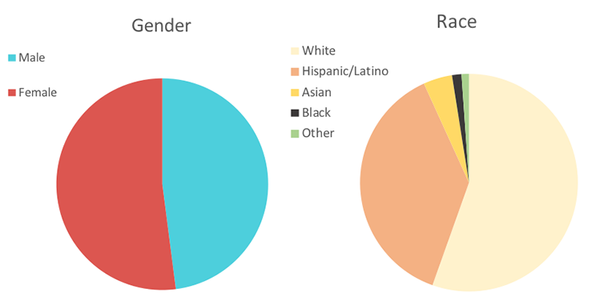
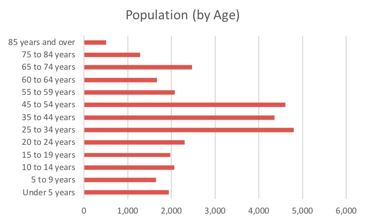
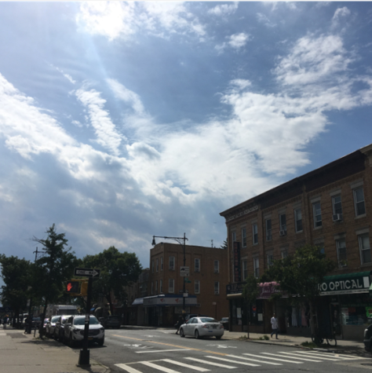
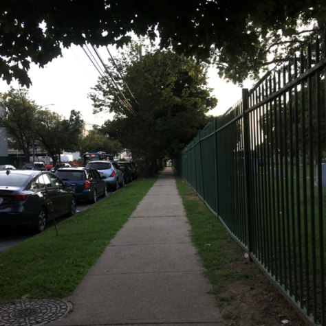
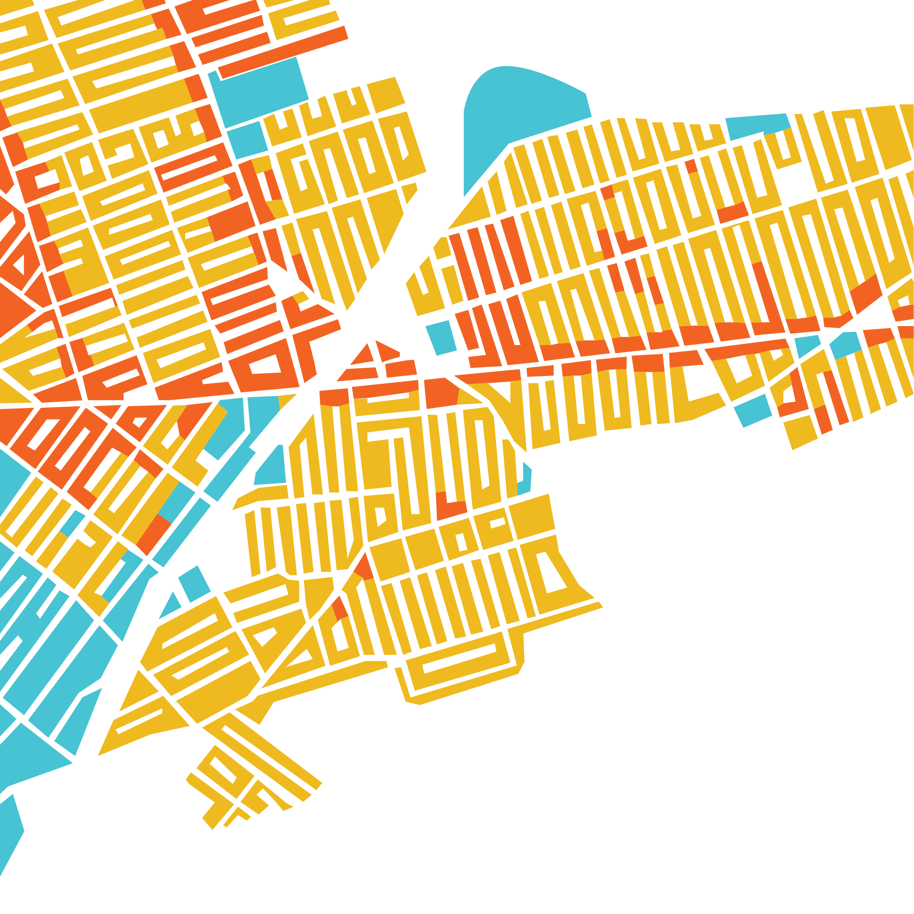

Glendale is a neighborhood in Queens, NYC.
State: New York
City: New York City
Borough: Queens
Community Board: 5
NTA*: QN19
Area: 2.78km^2
*NTA(Neighborhood Tabulation Area) is a unit created by NYC Department of City Planning, often used in census.
Total Population: 35,576
 Some resident building(condo).
Myrtle Avenue, where the stores at.
An usual sidewalk in Glendale.
From this one you can see there are many kinds of building.
Differences between building became more obvious in this one.
There are plenty of empty spaces even between buildings.
Glendale是一個在紐約市皇后區的鄰里社區。
州: 紐約
市: 紐約市
區: 皇后區
社區**: 5
NTA*: QN19
面積: 2.78km^2
氣候|█月均降雨 █月均溫
*NTA(Neighborhood Tabulation Area)是一個由紐約市都市規劃局所創立的單位，常用在人口統計中。
**此社區指的是Community Board。
總人口: 35,576
性別|█男性 █女性
人種|█高加索人 █拉丁裔 █亞裔
█非裔 █其他
一些住宅(公寓)。
Myrtle Avenue，店舖所在的街。
在Glendale常見的人行道。
有許多類型的建物。
建物類別在這張更佳的明顯。
在建物之間仍有許多空地。
█Main Roads █Normal Roads
█M Train █Fresh Pond Rd. Station
█Resident Zone █Resident&Commercial Mixed
█Commercial Zone █Industrial
Zone █Parks
█Single&Dual Building █Condo █Others
█Railroad █Public
█Cemetry █Private
█主要幹道 █一般道路
█地鐵(M) █地鐵站(Fresh Pond Rd.)
█住宅區 █住商混合█商業區 █工業區 █公園
█獨棟&雙拼 █公寓 █其他
█鐵路 █公共 █墓地 █私人
This site is created by Samuel Lin. It's just a temporary site designated for Basic Design 2.
Data sources: NYC OpenData, NYC ZoLa, NOAA National Centers for Environmental Information, DOI U.S. Geological Survey, Google Street View
© Samuel Lin, 2023
此網站是一個為了基本設計(二)所做的暫時性網站，並由林晟製作。
資料來源: NYC OpenData, NYC ZoLa, NOAA National Centers for Environmental Information, DOI U.S. Geological Survey, Google Street View
© Samuel Lin, 2023